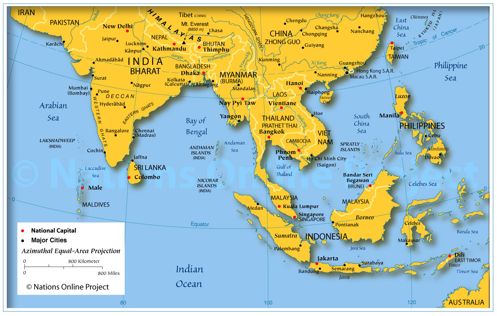

What Exactly is a Malayan Sun Bear?
The smallest of the world’s eight living bear species, the Malayan sun bear stands at only four or five feet tall and weighs in at 60-176 pounds. The Malayan Sun Bear is a mammal that has a lifespan of 25 years. This animal has soft, sleek fur that typically black, but can also range from reddish-brown to gray. Additionally, almost every bear has a distinct chest patch that is either yellow, orange, or white and can be speckled or spotted. Its muzzle is broad, but relatively short as well as light colored, giving the bear a dog-like appearance. Furthermore, it has tiny, rounded ears, a wrinkly forehead, and an extremely long tongue that extends from 8-10 inches, helping the bear extract insects, and also its favorite treat, honey (which could explain why the sun bear is also known as the “honey bear”). The sun bear has very large teeth, especially canines, and a high bite force, which help it to open tropical hardwood trees in pursuit of food. Meanwhile, the sun bear’s paws are large and naked, and it has long curved claws, making it well adapted for climbing trees. Sun bears do not hibernate, and are primarily diurnal, which means that they are active during the day and inactive or sleeping at nighttime. Bedding usually consists of fallen, hollow logs, but they also sleep standing in trees with cavities or in tree branches above the ground.
Click here to watch a video about this “beary” exotic animal.
Where Can You Find these Exotic Creatures?
The Malayan Sun bear can be found in the tropical forests of Southeast Asia, more specifically northeastern India, Bangladesh, Myanmar, Thailand, Malaysia, Laos, Cambodia, and Vietnam. However, the Sun Bear has been extirpated throughout many regions of the continent, and they now live very patchily through much of Southeast Asia.The Sun Bear inhabits primarily in lowland rainforest where there is not only a wide variety of foods to eat, but it also allows them to hide from any predators. Yet, throughout much of their natural range, the Sun Bear has lost vast regions of its habitat because of deforestation in order to clear land for agriculture and cut down rare and tropical trees for the timber agency.
Threats and Conservation
Malayan Sun Bears have been recently re-classified as Vulnerable on the IUCN Red List primarily due to the continued destruction of their habitat. Habitat loss is a huge threat to the Sun Bear population and it is particularly caused by human encroachment and illegal logging from both within and outside protected areas in order to grow coffee, rubber plants and oil palms. Malayan Sun Bears also face poachers since bear gallbladders and bile products are used in traditional medicines, and further threats include the capture of sun bears as pets and the killing of bears due to increasing human-bear conflicts. Fire and drought have recently been impacting the sun bear population, causing a decrease in suitable habitat and food availability that results in many bears suffering from starvation. Unfortunately, there haven't been any major steps to conserve this species, but there are laws that prohibit international trade and the killing of the Sun Bear (but they are not enforced very well).